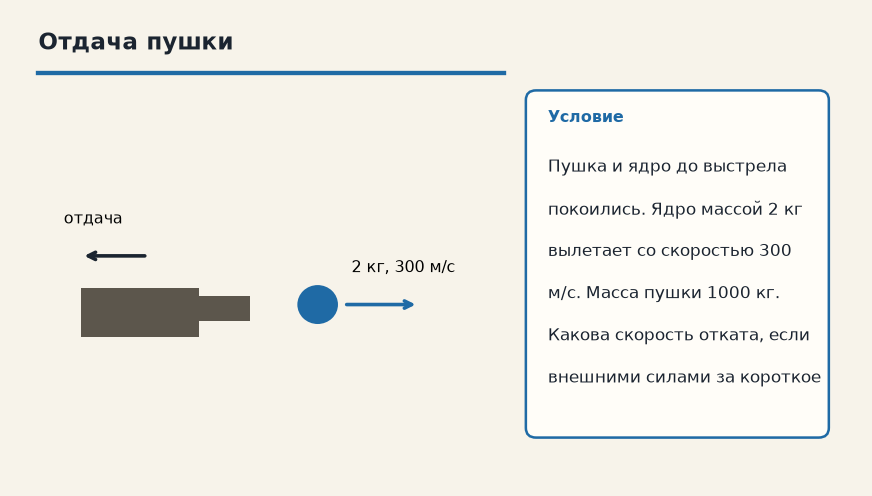

Механика · Законы сохранения · 4.1
Импульс тела
Лист для письменной работы: данные, перевод в СИ, искомая величина, ход решения, ответ. Ответов на листе нет.
1. Импульс 6 кг·м/с
Тело массой 2 кг движется со скоростью 3 м/с. Чему равен его импульс?

2. Отдача пушки
Пушка и ядро до выстрела покоились. Ядро массой 2 кг вылетает со скоростью 300 м/с. Масса пушки 1000 кг. Какова скорость отката, если внешними силами за короткое время выстрела пренебречь?

3. Тележка 5 кг
Тележка массой 5 кг движется со скоростью 4 м/с. Найдите импульс.
4. Отдача
Снаряд массой 2 кг вылетает из орудия массой 800 кг со скоростью 400 м/с. До выстрела система покоилась. Найдите скорость отката, внешними силами за время выстрела пренебрегите.
5. Сложение
Два тела движутся навстречу: 3 кг со скоростью 4 м/с и 2 кг со скоростью 1 м/с. Найдите модуль суммарного импульса, если за положительное направление взять скорость первого.
6. Осколки
Снаряд массой 6 кг в верхней точке разорвался на части 2 кг и 4 кг. Лёгкая часть полетела вперёд со скоростью 30 м/с относительно земли, до разрыва скорость снаряда была 10 м/с вдоль той же прямой. Найдите скорость тяжёлой части сразу после разрыва. Внешним импульсом за время разрыва пренебрегите.
7. Единица
В каких единицах записывают импульс в СИ?